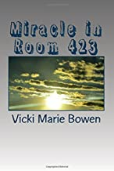

Miracle in Room 423
This book is an adult chapter book, not a children’s book. I wrote it because of circumstances in my life that compelled me to do so. June 3, 2009, was a life changing day for me. I was a special education teacher and it was the last day of the school year. I had activities planned to send the children on their way to summer. But they didn’t come to pass. I awoke that morning with the worst headache I had ever experienced. I tried to get up and get going, but I could not move. Luckily, my husband was home and knew it was my head that hurt. Shortly, I passed into an unconsciousness that lasted for days. My family did everything for me. I had a brainbleed/stroke, was airlifted to a trauma hospital, underwent brain surgery and was given a small chance of living. But, I did! Miracle in Room 423 is the story of my journey back to health. I’m not completely where I was, but I’m still alive and can function normally. By the grace of God, I truly am a miracle!